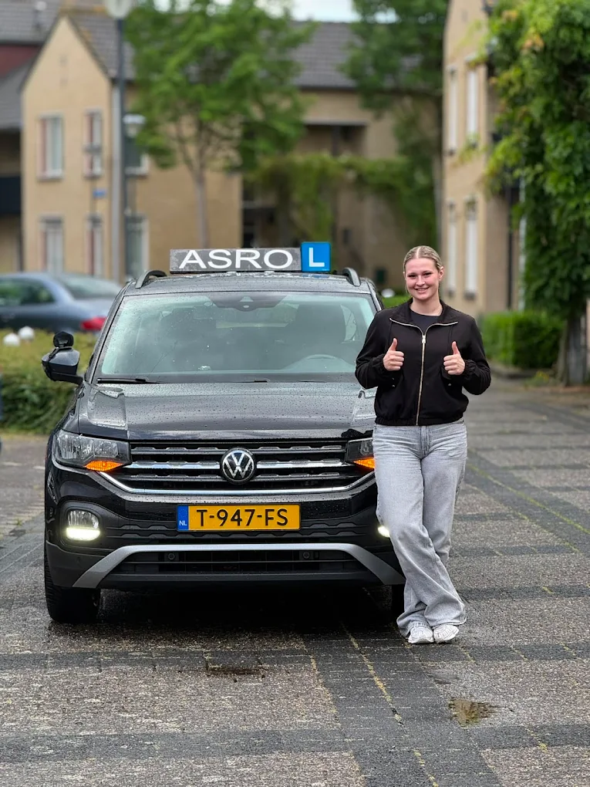
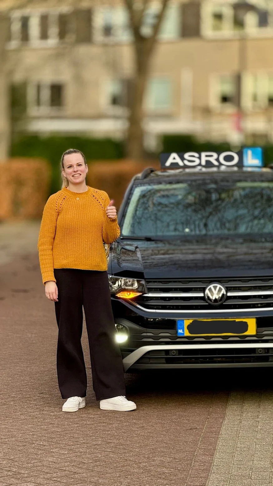
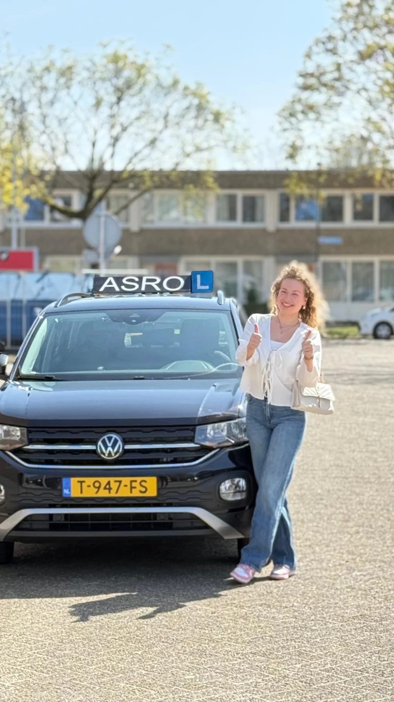
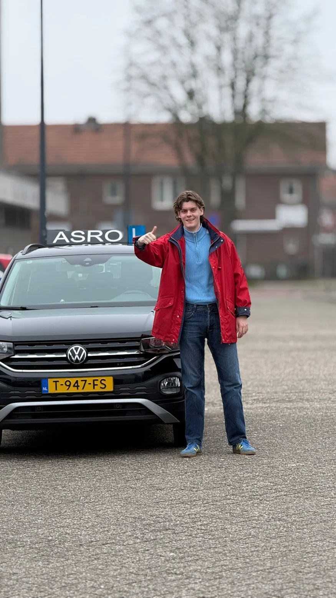
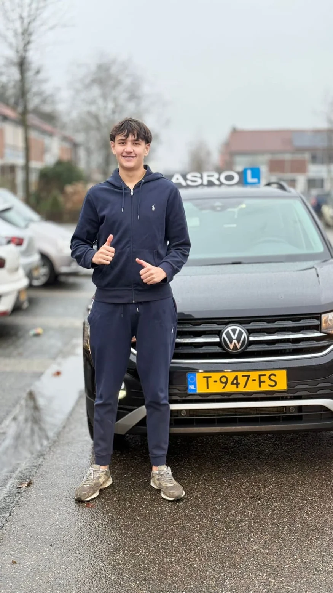
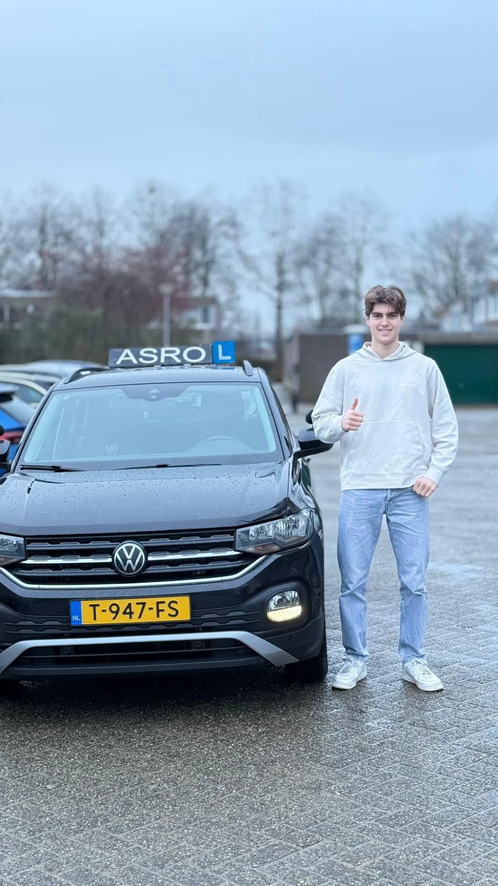
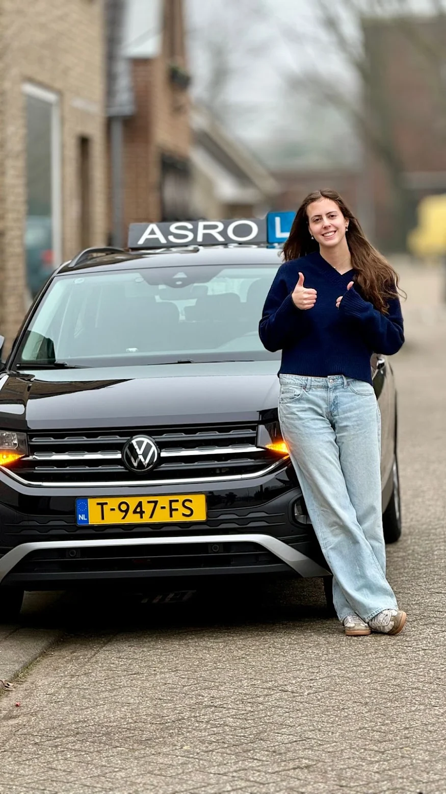
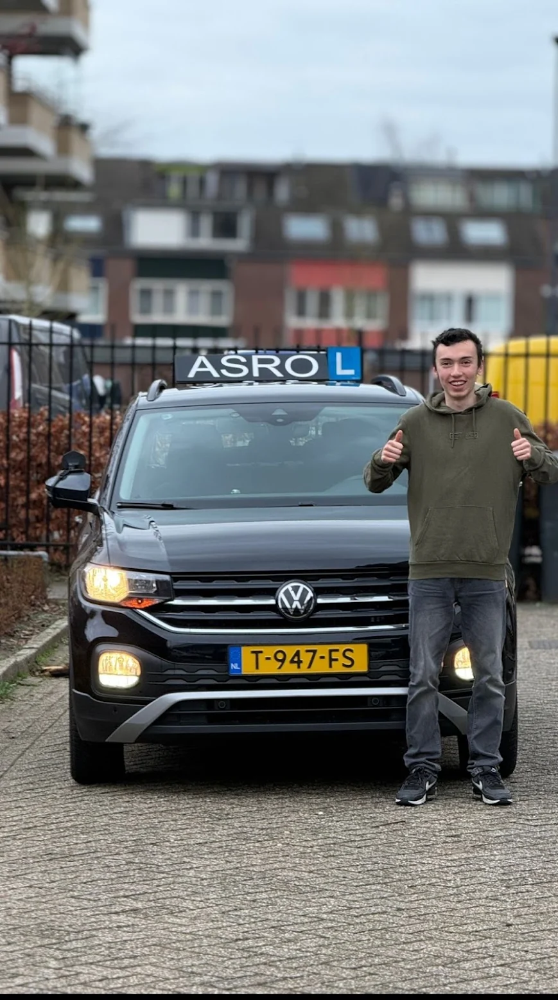

1X

Kornelia
"De lessen waren altijd gezellig, duidelijk en leerzaam. Taylan zorgt ervoor dat je met vertrouwen naar je examen gaat."
Rijschool Asro · Den Bosch · 4,9 op Google uit 131 reviews
Het bewijs
De meeste rijscholen houden hun slagingspercentages liever vaag. Wij bouwen er de hele site omheen, met de bron erbij, zodat je het zelf kunt controleren.
0%
slaagt bij het eerste praktijkexamen
Over 299 examens · CBR
0%
haalt de tussentijdse toets
Over 317 toetsen · CBR
0%
slaagt bij een herexamen
Over 63 herexamens · CBR
0/5
gemiddelde reviewscore op Google
131 reviews · Google
De route
Geen vaag traject, maar een route met vaste checkpoints. Jij bepaalt het tempo, Taylan bewaakt de richting. En je zit nergens aan vast: na elke 5 of 10 lessen beslis jij of je doorgaat.
Een echt lesuur, geen kennismakingspraatje. Je rijdt gewoon, en na afloop hoor je eerlijk waar je staat en hoeveel lessen Taylan verwacht dat je nodig hebt. Kost je niks en je verplicht je tot niks.
Elke les heeft een doel en eindigt met eerlijke feedback: wat ging goed, wat kan beter. Los of in een pakket, voor de prijs per les maakt dat weinig uit. Theorie oefen je thuis in de On My Way app, waar ook je voortgang in staat.
Een generale repetitie bij het CBR, met een echte examinator. Iedereen die hem bij Asro deed, haalde hem: 317 van de 317. Haal je de toets, dan hoef je de bijzondere verrichtingen op het examen niet opnieuw te laten zien.
Je rijdt pas af als Taylan zegt dat je er klaar voor bent, niet eerder. Daarom slaagt 77 procent hier in één keer. Op de dag zelf rijd je eerst een uur warm, daarna stap je met vertrouwen bij de examinator in.
Foto bij het bord, rijbewijs aanvragen bij de gemeente, en daarna Taylan een beetje missen. Dat laatste horen we opvallend vaak.
De man achter de cijfers
Taylan is geen instructeur die naast je zit te knikken. Hij stelt kritische vragen over de keuzes die jij als bestuurder maakt, zegt eerlijk wat goed gaat en wat beter moet, en kan streng zijn als dat nodig is. Leerlingen die gehaast reden, leerden bij hem de knop omzetten. Leerlingen die koppig waren, kregen hem toch mee.
Tegelijk is het gewoon gezellig in die auto. Er wordt gelachen, er is ruimte voor een goed gesprek, en blokuren vliegen voorbij. Meerdere geslaagden schrijven letterlijk dat ze de lessen missen nu ze hun rijbewijs hebben.
En één ding is heilig: je gaat pas op examen als je er klaar voor bent. Niet om je langer te laten lessen, maar omdat één keer afrijden goedkoper is dan twee keer.
"Ik ga je missen maat!"
Ivar, in één keer geslaagd na ruim 3 maanden
De geslaagden
Elke foto hieronder is een echte leerling van Taylan, met het verhaal in hun eigen woorden erbij. Sleep maar door de rij.

Kornelia
"De lessen waren altijd gezellig, duidelijk en leerzaam. Taylan zorgt ervoor dat je met vertrouwen naar je examen gaat."
Ivar
"Hij is oprecht en meelevend, heeft humor, maar is ook heel duidelijk. Ik ga je missen maat!"

Charlotte
"Op mijn 18e gezakt, 13 jaar later toch weer begonnen. Bij Rijschool Asro in één keer geslaagd! Taylan heeft een no-nonsense aanpak."
Kim
"Ik ben iemand met mega faalangst, maar Taylan heeft mij zo goed en persoonlijk geholpen dat ik zelfs geen faalangstexamen nodig had."

Nina
"Stiekem vind ik het toch wel jammer dat ik niet meer wekelijks in de auto zit met Taylan, want het was altijd leuk én leerzaam."

Beer
"Taylan weet precies hoe hij je op een efficiënte manier helemaal klaar kan maken voor het praktijkexamen. En er is vaak zat ruimte voor een goed gesprek en een grapje."
Mira
"Hij stuurde me pas naar het examen toen hij zeker wist dat ik er helemaal klaar voor was. Ik had geen betere rijschool kunnen kiezen."
Jonas
"Bloed, zweet en tranen: de woorden die Taylan mij vertelde voordat ik ging afrijden. Ik was niet de makkelijkste leerling, toch is het gelukt om in 1x te slagen!"

Marvin
"Zijn humor en fijne gesprekken maakten de lessen elke keer weer een plezier. Ik ging met vertrouwen mijn examen in en slaagde direct."

Juriaan
"Ik was een gehaaste rijder. Door Taylans coaching heb ik de knop om kunnen draaien. En je zit niet vast aan pakketten, je hebt alles zelf in de hand."

Sophie
"Duidelijk, geduldig en soms streng op de juiste momenten. Ik heb super veel gelachen en geleerd van Taylan!"

Milan
"Hij geeft eerlijke feedback over wat goed gaat en wat beter kan en dat helpt echt om snel stappen te maken."
Tarieven
In elk pakket kost een les gewoon €72,50, of je er nu 5 koopt of 40. Een los uur is €75. Dat is het hele verhaal, en je beslist na elke 5 of 10 lessen zelf of je doorgaat.
Losse rijles
€75
per uur, altijd los te boeken
10 rijlessen
€725
€72,50 per les
Proefles
€0
een heel lesuur, gratis en vrijblijvend
Betalen in termijnen kan. Examens en toetsen boek je los, altijd inclusief een uur les vooraf. Alle bedragen komen van de huidige prijslijst van Asro.
Alle tarieven bekijkenVoor wie het anders loopt
Faalangst en rijangst
Taylan bouwt je vertrouwen stap voor stap op, in jouw tempo. Kim kwam binnen met, in haar woorden, mega faalangst. Ze slaagde in één keer, zonder dat er een faalangstexamen aan te pas kwam.
Lees de aanpakSpoedcursus
Snel je rijbewijs nodig voor werk of studie? Bij Asro kun je direct beginnen en plan je blokuren dicht op elkaar. Zelfde aanpak, zelfde lat, alleen in een hogere versnelling.
Zo werkt de spoedrouteGeen intakegesprek, geen kleine lettertjes. Je stapt in, je rijdt een uur, en daarna weet je precies waar je staat. Appen is het snelst, Taylan reageert ook tussen de lessen door.
Ma t/m za van 07:00 tot 21:00 · Den Bosch, Rosmalen, Vught en Vlijmen